Ubuntu con interfaz gráfica en Windows 10/11 con Windows Subsystem for Linux
Traigo esta tarea de instalación y configuración de Ubuntu 20.04 LTS con entorno gráfico dentro de Windows 10/11, haciendo uso de Windows Subsystem for Linux a su última versión (WSL2).
¿Qué es WSL?
Windows Subsystem for Linux es una capa de compatibilidad que ha
agregado Microsoft en Windows 10 y 11 para entornos GNU/Linux dentro
de Windows, lo anterior quiere decir que podrás usar ciertas
distribuciones de GNU/Linux en Windows 10/11.
La primera versión de WSL llevó al intérprete de comandos que se
instala en la mayoría de las distribuciones GNU/Linux (estamos
hablando del shell bash) a Windows, permitiendo ejecutar binarios
desde Windows. Para la versión 2 de WSL hubo grandes mejoras en
cuando rendimiento, ya que WSL2 utiliza un núcleo Linux real. Se
pueden utilizar aplicaciones de GNU/Linux desde Windows 10/11
utilizando direcciones IP remotas, así mismo permite la gestión de
una distribución GNU/Linux con entorno gráfico.
Primero, que versión de Windows tienes. Con ejecutar el comando
winver
verás la versión de Windows.
Una vez comprobado la versión de Windows, tienes que instalar 2 características: Plataforma de máquina virtual y Subsistema de Windows para Linux.
Se puede instalar de dos formas, usando la herramienta DISM de Powershell o a través de Activar o desactivar características de Windows:
En Powershell, ejecutado en modo administrador, debes de introducir los siguentes comandos.
dism.exe /Online /Enable-Feature
/FeatureName:Microsoft-Windows-Subsystem-Linux /All
/NoRestart
dism.exe /Online /Enable-Feature
/featureName:VirtualMachinePlatform /All /NoRestart
En Activar y desactivar características de Windows, debes dar click en la casilla para seleccionarlo para instalarlo.
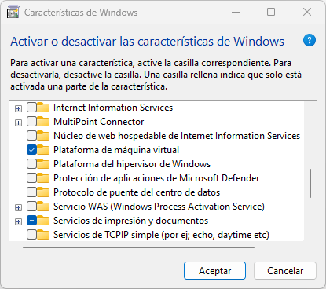 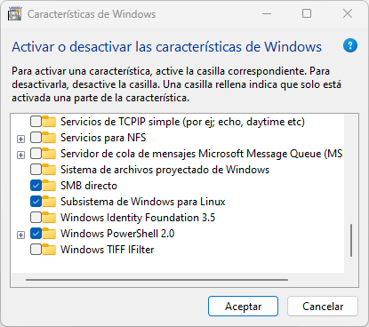Después hay que reiniciar Windows para activar completamente las características instaladas.
Luego, hay que volver abrir Powershell, en modo adminsitrador, para permitir usar WSL2 de forma predeterminada.
wsl --set-default-version 2
Si sale un mensjae de que WSL2 requiere una actualización en su componente kernel, debes abrir el enlace que te da. Con Ctrl + Click izquierdo abres el enlace.
 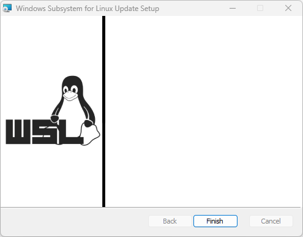
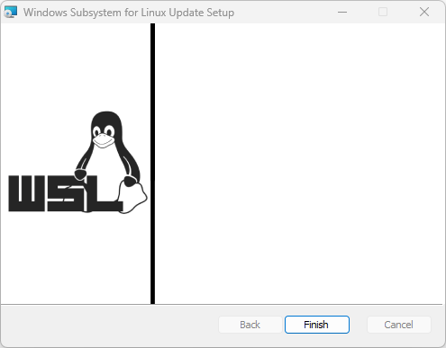
Debes volver a ejecutar otro vez el comando.
wsl --set-default-version 2
Ahora, abres la Microsoft Store e instalas la versión de Ubuntu que quieras.
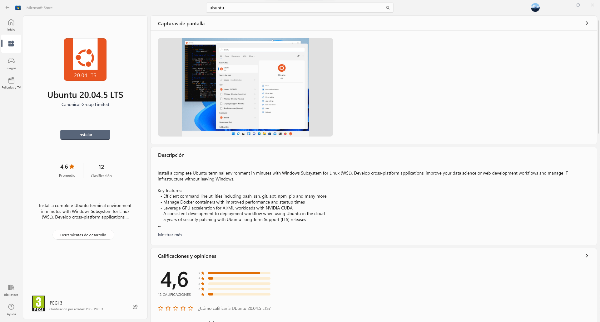Una vez descargado, le das abrir y saldrá un terminal de Ubuntu.
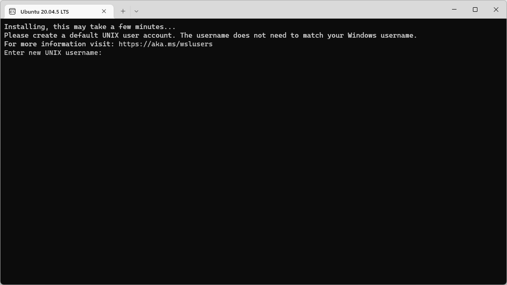 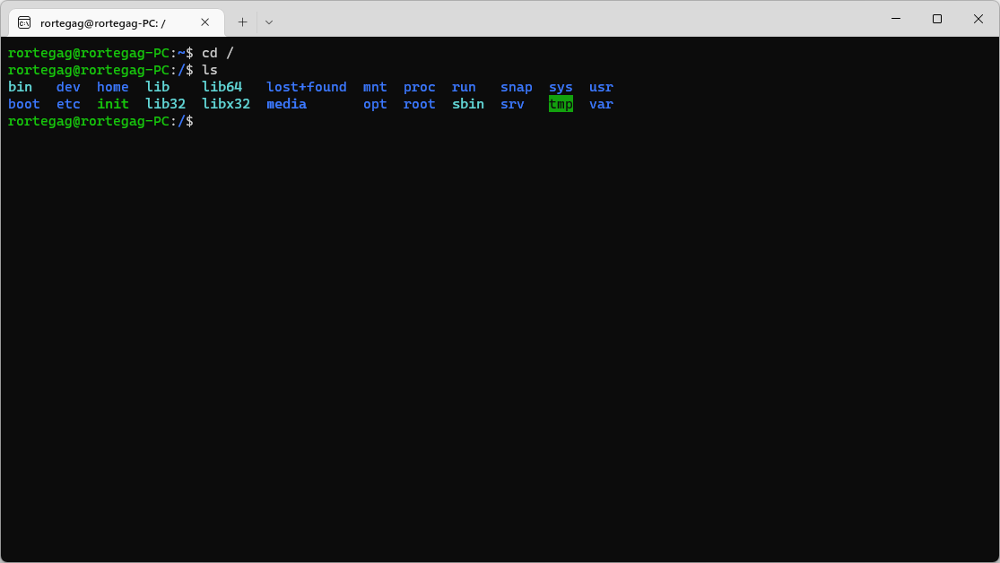
Si ejecutas el comando:
wsl -l -v puedes ver que Ubuntu
se está ejecutando.
Dentro de Ubuntu, ejecuta los siguientes comandos en este orden:
-
sudo apt update && sudo apt -y upgrade -
sudo apt install -y xrdp -
sudo apt install -y xfce4 -
sudo apt install -y xfce4-goodies -
sudo cp /etc/xrdp/xrdp.ini /etc/xrdp/xrdp.ini.bak -
sudo sed -i 's/3389/3390/g' /etc/xrdp/xrdp.ini -
sudo sed -i 's/max_bpp=32/#max_bpp=32\nmax_bpp=128/g' /etc/xrdp/xrdp.ini -
sudo sed -i 's/xserverbpp=24/#xserverbpp=24\nxserverbpp=128/g' /etc/xrdp/xrdp.ini -
echo xfce4-session > ~/.xsession -
sudo nano /etc/xrdp/startwm.sh
Puedes seleccionar el que quieras, LightDM es más ligero que GDM3.
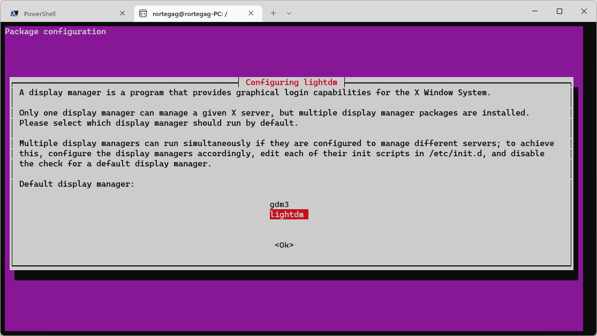
Cuando estes editando con el editor de archivos nano,
debes comentar las siguentes líneas:
# test -x /etc/X11/Xsession && exec /etc/X11/Xsession
# exec /bin/sh /etc/X11/Xsession
Agrega la siguiente línea.
startxfce4
Guarda el archivo (Ctrl + O) y sal (Ctrl + X).
Ahora inicia el servicio de escritorio remoto.
sudo /etc/init.d/xrdp start
Abre el programa de Conexión a escritorio remoto.
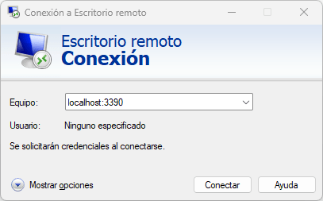Y cuando te conectes, pon tu usuario y contraseña.
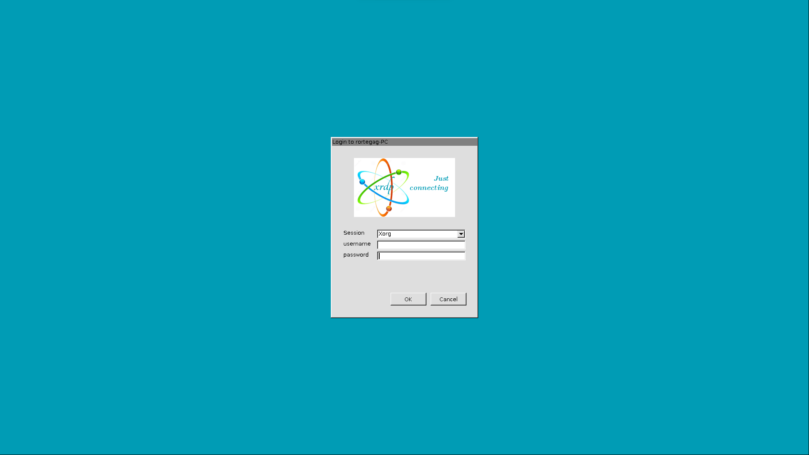Y ya tienes un Ubuntu operativo con entorno gráfico sin sacrificar rendimiento del ordenador.
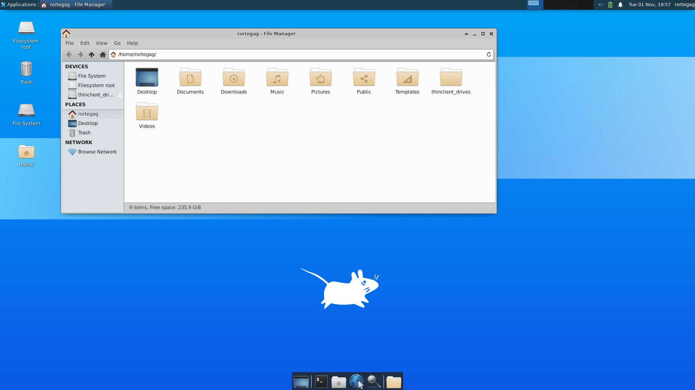